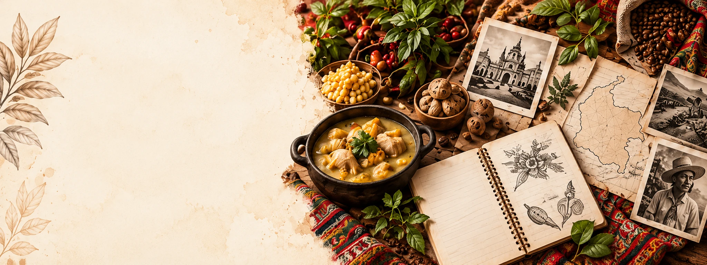
NUESTRA LÍNEA DE INVESTIGACIÓN
Rescate del Patrimonio Cultural
LÍNEA DE INVESTIGACIÓN
Rescate del Patrimonio Cultural
Gastronómico Colombiano
Exploramos, documentamos y valoramos el patrimonio gastronómico de Colombia como una expresión viva de nuestra identidad cultural, territorio y biodiversidad.
Patrimonio
Etnografía
y tradición
Memoria
culinaria
Territorio
y futuro
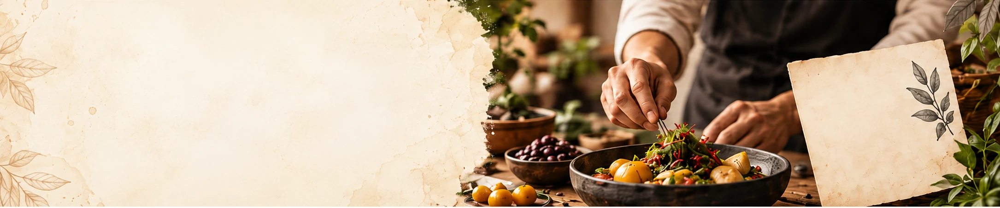
SOBRE LA LÍNEA
Una línea para investigar
nuestra identidad gastronómica
La línea de investigación “Rescate del Patrimonio Cultural Gastronómico Colombiano” se centra en el estudio, la documentación, la innovación y la difusión de las prácticas alimentarias, saberes, ingredientes y tradiciones que conforman la gastronomía del país, como expresión de su diversidad cultural, territorial y biológica.
Conocer más¿Qué buscamos?
Identificar
potencial existente
Reconocer y documentar los saberes, prácticas e ingredientes de valor patrimonial en los diversos territorios de Colombia.
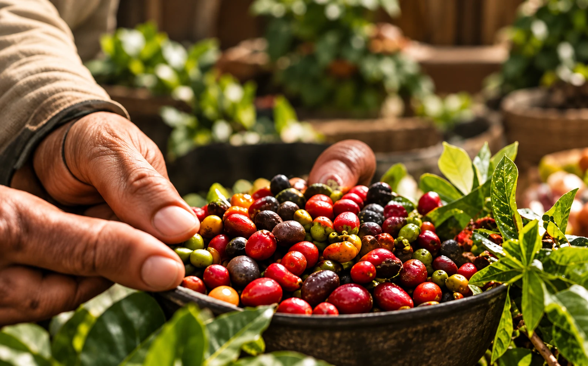
⤢
Construir
conocimiento
Generar y sistematizar saberes a través de la investigación, el diálogo de saberes y la articulación interdisciplinaria.
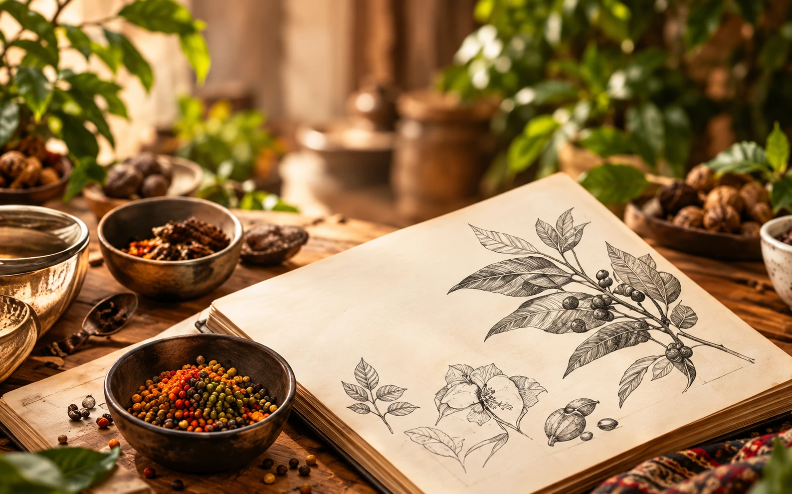
⤢
Valorar los saberes
tradicionales
Reconocer el papel de las comunidades, actores tradicionales y portadores de saberes como actores fundamentales del patrimonio gastronómico.
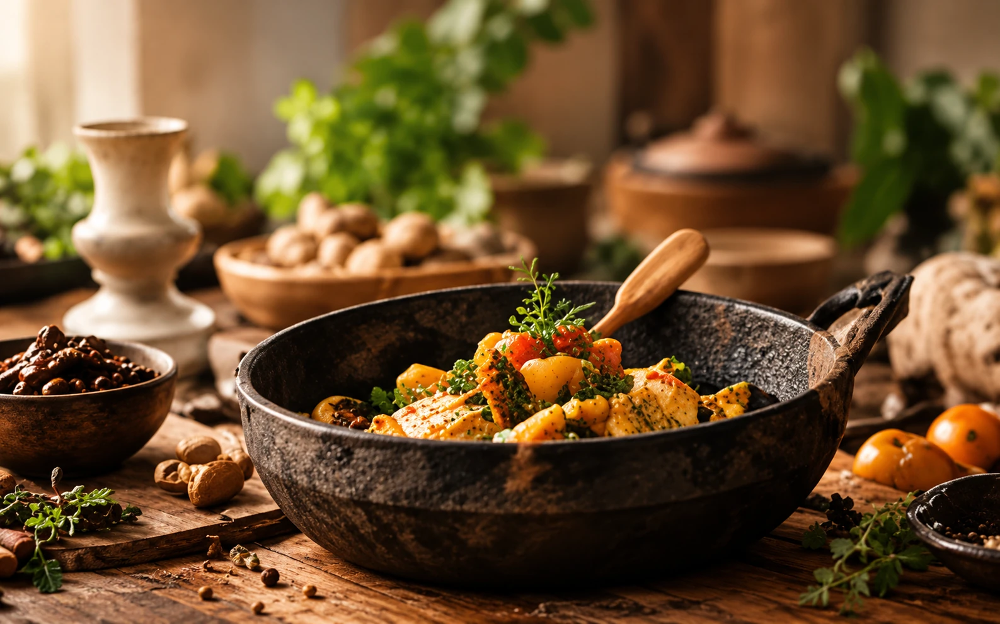
⤢¿CÓMO INVESTIGAMOS?
01
Observación
y documentación
Trabajo de campo en territorios, registro de prácticas, ingredientes y contextos culturales.
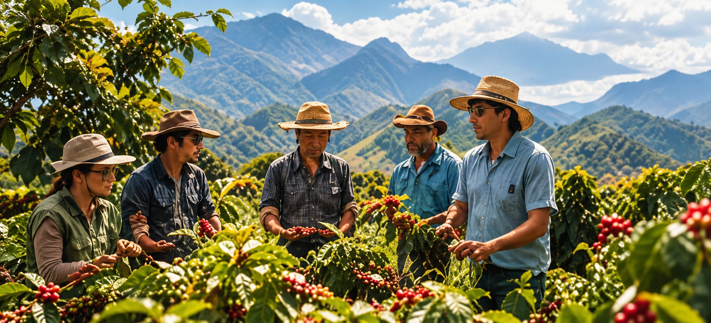
⤢
02
Análisis y contraste
de información
Estudio de fuentes, diálogo de saberes y análisis interdisciplinario.
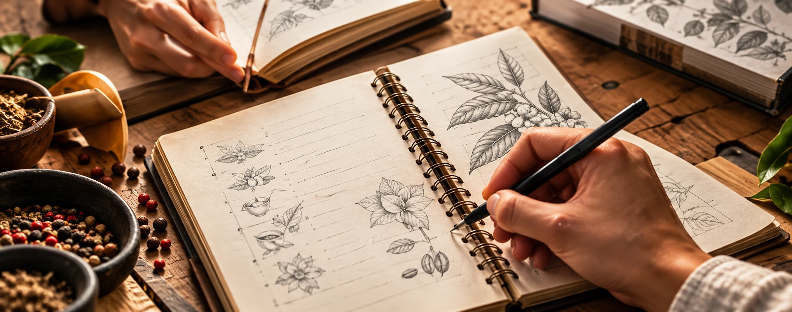
⤢
03
Experimentación
y creación aplicada
Desarrollo de propuestas gastronómicas desde el rescate y la innovación.
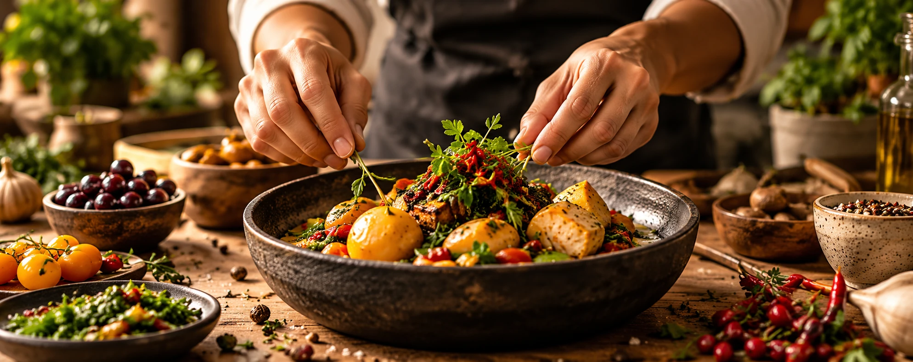
⤢
04
Divulgación
y transferencia
Socialización de resultados, publicaciones, eventos y acciones con impacto territorial.
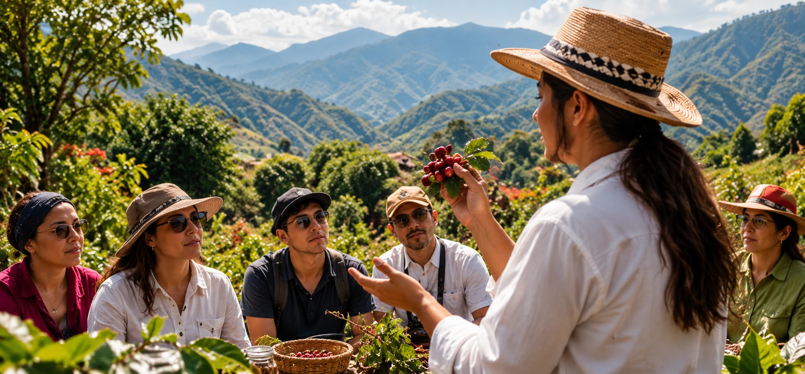
⤢RETOS Y PROYECCIÓN
RETOS
Contextualizar nuestro
Contextualizar nuestro
patrimonio gastronómico
Generar conocimiento situado que contribuya al reconocimiento, la sostenibilidad y la preservación de la diversidad gastronómica colombiana frente a los desafíos contemporáneos.
VISIÓN
Ser un referente en
Ser un referente en
gastronomía y territorio
Posicionarnos como una línea de investigación reconocida por su aporte a la salvaguardia del patrimonio gastronómico, la innovación con identidad y el desarrollo territorial sostenible.
CONOCE NUESTRAS SUB-LÍNEAS DE INVESTIGACIÓN
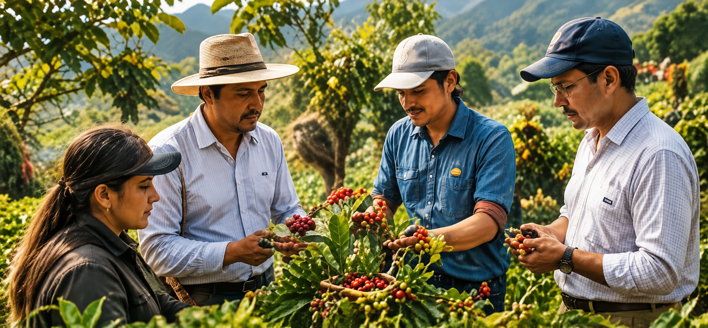
⤢Cluster
→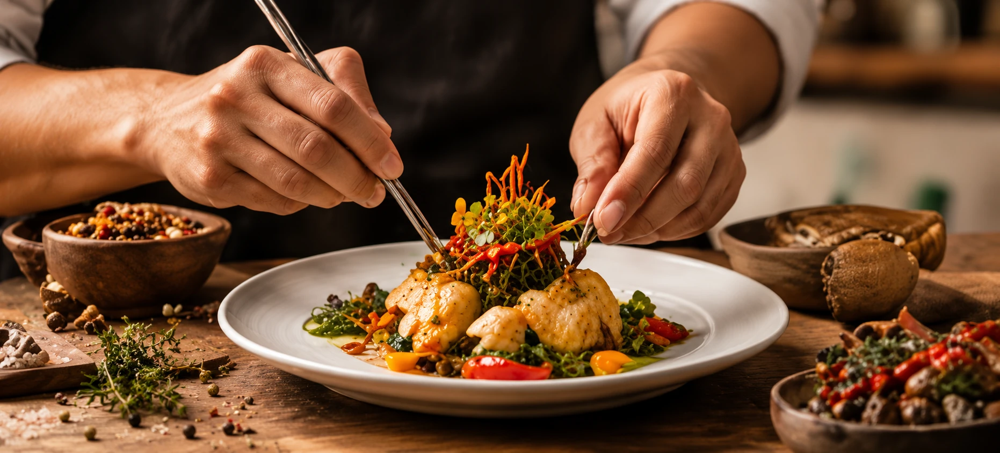
⤢Desarrollo de Productos (Rescate - Innovación)
→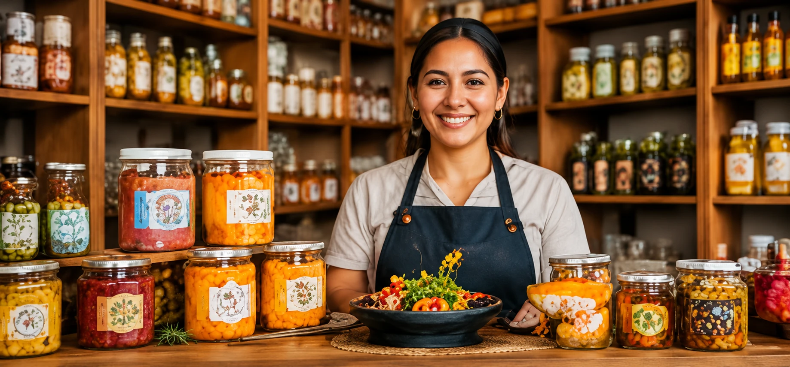
⤢
Emprendimiento
Gastronómico
→
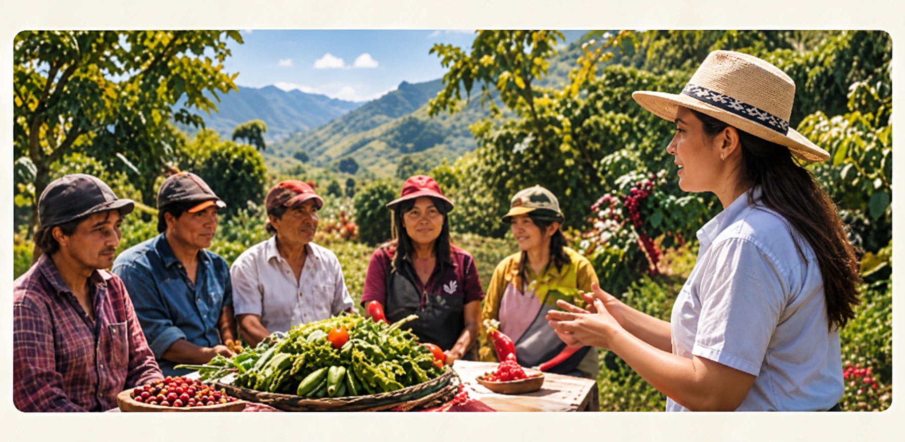
⤢